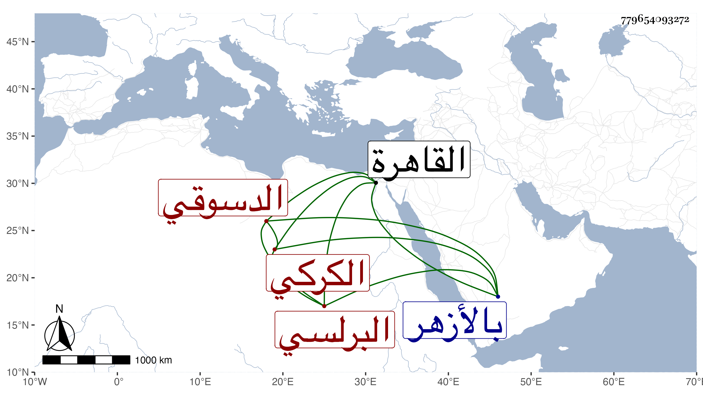

0902Sakhawi.DawLamic.ITO20230111-ara1.EIS1600.779654093272
Biography ID: 779654093272
335
أبو الخير الكركي الأصل البرلسي نزيل القاهرة وخليفة المقام الدسوقي وصاحب ديوان المهمندار يعقوب شاه والمعين له على تحدثه في أوقاف الحاجب ممن اشتغل وتميز في الفرائض والحساب والشروط وتكسب بها وذكر فيها بمالا يرتضى بل زاد في تقبيح الصنيع مع إبراهيم التلواني وشارك في الفقه بحيث أذن له البكري والبامي في الإفتاء والتدريس وقصدني غير مرة فما رأيت خاطري يقبله سيما وقد كان يربي شعره ويسدله وصارت له زاوية وجماعة مات في صفر سنة تسعين وصلى عليه بالأزهر في مشهد حافل ودفن بزاويته بالقرب من الباطلية وما أظنه يقصر عن الخمسين عفا الله عنه .
